DADA2026:8
Defence against the Dark Arts
Eighth topic - Infrastructure
Building better support systems
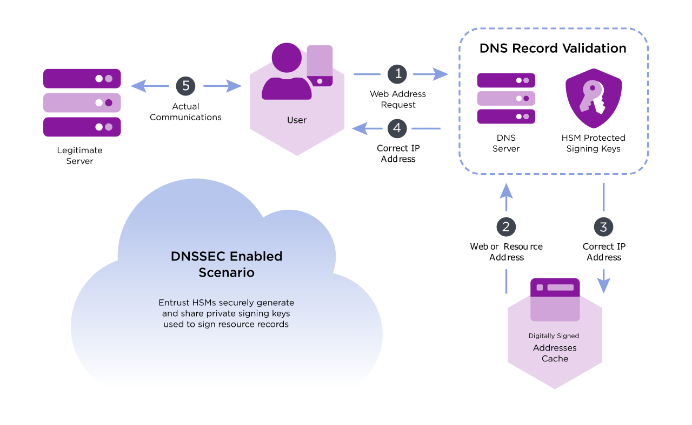
Where are we?
- Introduction (in May):
-
Warfare, with an indistinct enemy.
- Social Engineering (in May):
-
Examples - phishing, vishing, tricking. Human weaknesses.
- System Complexity:
-
Fight back with design principles, standards and formal methods.
- Crypto 1:
-
Traditional systems - substitution and permutation. (Pre 1976).
- Crypto 2:
-
(Post 1976) Asymmetric systems: OWF, computational complexity, hashes.
- IP Networks:
-
Layered structure designed for resilience, not security. Hardening the Internet.
- OtherNets:
-
Other communication worlds that largely rely on security-by-obscurity.
- Web Apps:
-
Weaknesses and defences for web applications.
- Infrastructure:
Today we will look at infrastructural elements: banking, PKI, the DNS, IoT devices and media. We will also be looking at some of the underlying mechanisms used to build these systems.
Outline
- Banking systems, Public key infrastructure
- Authentication without passing passwords
- Voting
- Hardware... IoT, DVD, DNS...
Authentication, logging in...
Outline
- Banking systems, Public key infrastructure
- Authentication without passing passwords
- Voting
- Hardware... IoT, DVD, DNS...
Case study 1: SWIFT (for sending money overseas)[i1,X]
It was set up before PK and had an unusual set of constraints. Banks did not trust the system (i.e. they did not want dishonest SWIFT people to steal from them), and authenticity was independent of confidentiality because France forbade cryptography (!).
Systems also had to enforce non-repudiation, and had to support the control of transactions under some policy or other (two-controls, balancing of books).
- Authentication: Messages have a MAC (Message Authentication Code - a keyed hash function) attached. Banks would exchange Keys for the MAC in face-to-face meetings, or via third channels (certainly not via SWIFT). As a result SWIFT took no part in authentication.
- Non-repudiation: Countries log messages at a regional processing centre (RGP), before sending on to SWIFT. RGPs are more or less independent.
- Confidentiality: Used proprietary encryption devices, keys were hand-carried for distribution.
- Dual controls: Roles were separated - one clerk entered data, another checked and sent it.
Case study 1: SWIFT[i2,i6]
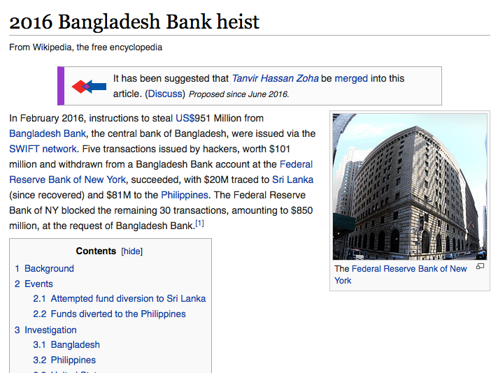
For 20 years it ran well without any external fraud. Since 1996 SWIFT has used PK cryptography.
Most frauds have an insider bypassing a dual control. Stanley Rifkin, a computer consultant, got hold of an authorization code, and used this to authorize a transfer of $10M worth of diamonds.
In February 2016, attackers tried to steal US$951 Million from Bangladesh Bank, the central bank of Bangladesh, using the SWIFT network. They succeeded in getting $81M. The attack involved long term study and infiltration of the bank head office, multiple “runners” in multiple countries, and a significant effort.
Case study 2: Man-in-the-middle for Public Keys

We see that a man-in-the-middle can return a bad (public) key to Alice, who incorrectly assumes it is from Bob. From then on she encrypts using a key that Harry made, and who also has the matching secret key.
Case study 2: Man-in-the-middle for Public Keys
How to ensure that keys belong to Bob?
Need some trusted authority/heirarchy to certify that keys are OK. (Verisign, Entrust...)
How to trust the Authority?
Authority's public credentials are already resident on your machine...
What does the Authority do?
It digitally signs a certificate using it's private key. The certificate binds a public key to Bob.
The overall mechanism provides certificates that contain public keys, bound to identities (web sites for example). Certifying authorities provide some level of trust, providing certificates.
We have to trust (certifying) authorities. We may not know WHO our computer trusts, and bad certificates originally had no way of being discarded. Even now the work-around is awkward.
Case study 2: The certification mechanism

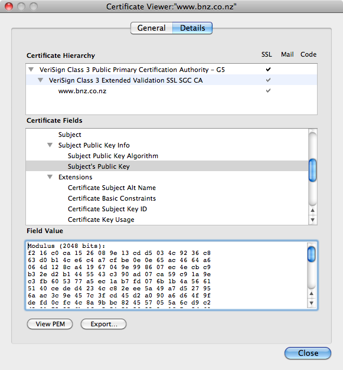
Your organisation communicates with the RA (Registration Authority), passes them a public key, and convinces them that they are the rightful owners of the domain or web site. Once the RA is convinced, it gets the CA (Certifying authority) to digitally sign the public key with the name/ID, binding them together in a “certificate”. This is passed back to the organisation.
Case study 2: A padding attack on RSA[ctrl-i7]
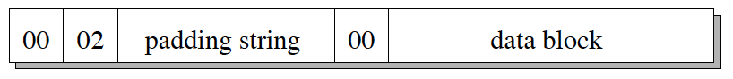
In 1998, Daniel Bleichenbacher from Bell labs published a padding oracle attack on PKCS#1 (and hence SSL V3.0). The attack is based on the fact that RSA is homomorphic with respect to multiplication. In addition, some (web) servers can act as padding oracles.
In SSL/TLS, during the initial negotiation, critical keys are sent, encrypted using RSA. A padding oracle attack can retrieve this "pre"master secret key, in what has been called the “million message” attack. The details of this attack are found in the paper, but it is not dissimilar to the padding oracle attack in Lab2; multiple messages are sent to the server, which responds differently if the format of the padding is correct or incorrect.
The approach taken to fix this was to ask vendors to add extra countermeasures: primarily returning uninformative server responses.
Case study 2: Revisiting PKCS#1[ctrl-i8,X]
In 2018, Hanno Böck and others decided to see what the (RSA) situation was after 20 years. They were astonished that it did not seem to be fixed. They managed to identify that Paypal, Apple, Ebay, Facebook, Cisco and others were all vulnerable to Bleichenbacher's attack!
It gets worse...
- Hanno managed to use the padding oracle to sign a message of their own using Facebook's private key. They did not retrieve the key, but could get the server to sign a message for them!
- They found that some of the biggest vendors of web systems (for example Cisco ACE) still provided insecure RSA-based TLS. Cisco ACE ONLY provides RSA, and will not update it - it is out of support.
Hmmmmmm...
In 2022, all NIST/ISO/IEC standards are driven by formal (mathematical) analysis. Crypto has to be proved correct.
Case study 3: Weak DH[X]
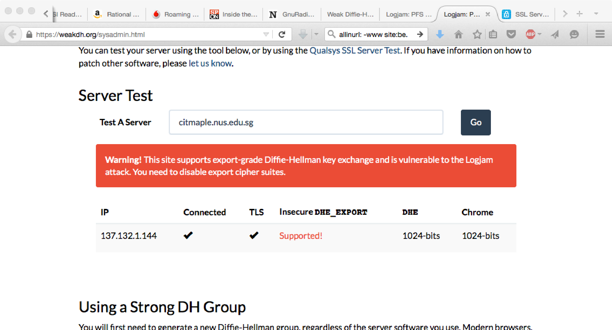
... and in them we discover that NSA has been routinely listening in on skype calls, and intercepting IPsec and https:// conversations.
My colleague Martin suggests that, in this day and age, most people couldn't care less. Maybe he is right. But in any case, how can it be done?
In October 2015, a plausible explanation was revealed (see [X] above).
Case study 3: large scale monitoring of IPSec
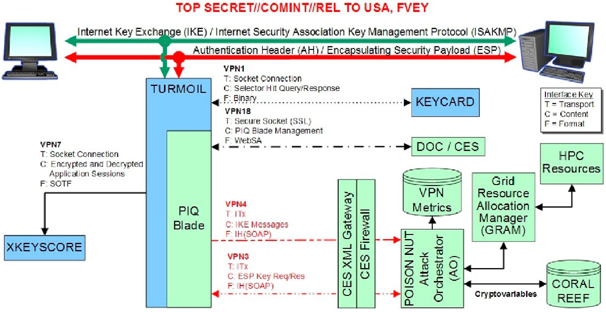
Notice the diagram is clearly indicating the IKE (Internet Key Exchange), and the use of IPsec - the AH and ESP packets.
There is so much supporting material, that it is clear that this is not FUD, but is a real mechanism, in use since at least 2009.
It relies on the use of the fixed large primes used in Diffie-Hellman key exchange software.
Case study 3: large scale monitoring of IPSec
Initially, the Diffie-Hellman key exchange is downgraded to one using smaller (EXPORT-GRADE) bitsize primes. The IKE (Internet Key Exchange) values are sent to a supercomputer, which returns actual keys within 15 minutes. On a modern computer/PC? About 30 seconds.
Common (NFS) algorithm can use pre-computation, for a specific prime, of 3 out of the 4 steps:
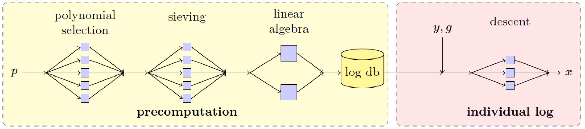
On the Browser, you must check you have the updates which stop *you* being vulnerable. On the Server you must Disable Export Cipher Suites, use (Ephemeral) Elliptic-Curve Diffie-Hellman (ECDHE) and use a Strong, Diffie Hellman Group (2048-bit or stronger).
Case study 4: The DNS
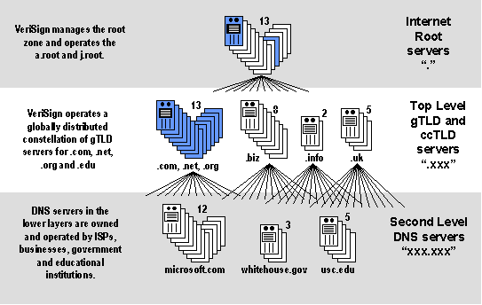
Forms a tree, and a new request at a leaf has to traverse the tree. A distributed database, with distributed caching of recent name requests. The distributed nature of the DNS provides plenty of opportunity to inject in false entries.
There are various approaches to harden the DNS.
Outline
- Banking systems, Public key infrastructure
- Authentication without passing passwords
- Voting
- Hardware... IoT, DVD, DNS...
Challenge response[1]
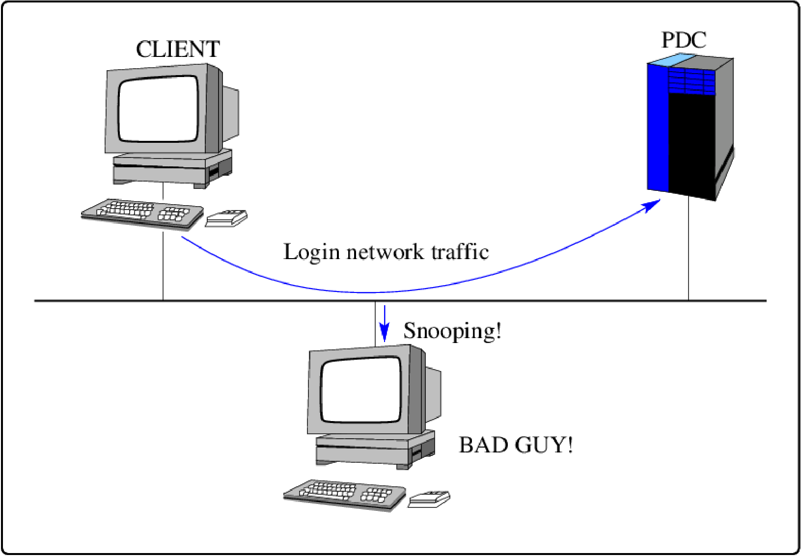
Challenge-response protocol (Windows)
In reply the server returns an 8 byte, random value, stored in the server after the reply is sent and known as the challenge. It is different for every client connection.
The client then uses the hashed password, appended with 5 null bytes, as three 56 bit DES keys, to encrypt the challenge 8 byte value, forming a 24 byte value. There are two hashes of the user's password, and both responses are returned to the server, giving two 24 byte values known as the response.
The server reproduces the above calculation, using its own value of the hashed password and the challenge value that it kept during the initial protocol negotiation. It then checks and if everything matches exactly, then the client knew the correct password and is allowed access.
The server never knows or stores the cleartext of the users password - just the 16 byte hashed values derived from it, and the cleartext password or 16 byte hashed values are never transmitted over the network - thus increasing security.
Challenge-response protocol (Windows)
- The 16 byte hashed values are a "password equivalent". You cannot derive the users password from them, but they can be used in a modified client to gain access to a server.
- The initial protocol negotiation is generally insecure, and can be hijacked in a range of ways. One common hijack involves convincing the server to allow clear-text passwords.
- Despite functionality added to NT to protect unauthorized access to the SAM, the mechanism is trivially insecure
Even without network access, it is possible by various means to access the SAM password hashes, and with network access it is easy.
The attack considered here is the use of either a dictionary, or brute force attack directly on the password hashes (which must be first collected somehow).
Kerberos/Cerberus
What is it? Kerberos is a network authentication protocol. It provides strong authentication for client/server applications using symmetric or public key cryptography. Kerberos is freely available in source form, and also is in commercial products (Windows uses Kerberos for login). status collapsedAuthentication... and encryption. Client and server prove their identity, and encrypt all of their communications. There is a Key Distribution Center (KDC). Kerberos uses a Needham-Schroeder symmetric key protocol. |
Kerberos
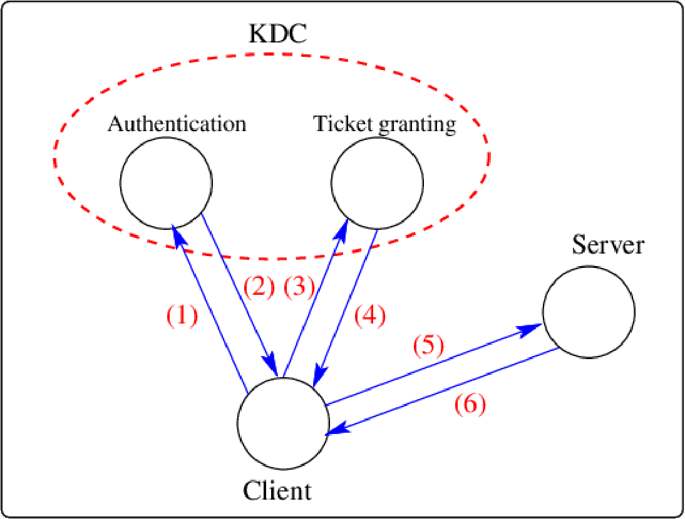
When a client first authenticates to Kerberos, she:
- Talks to KDC, to get a Ticket Granting Ticket .
- Uses that to talk to the Ticket Granting Service and get a particular ticket for a particular service.
- Uses that ticket, to interact with the server.
This way a user doesn't have to reenter passwords every time they wish to connect.
Note that if the Ticket Granting Ticket is compromised, an attacker can only masquerade as a user until the ticket expires.
Other infrastructural building blocks
Outline
- Banking systems, Public key infrastructure
- Authentication without passing passwords
- Voting
- Hardware... IoT, DVD, DNS...
Voting protocols[i3]
...independent systems vote in a kind of election..
We may want to put conditions on this. For example, afterwards we might want to check that the vote was correct, or that each voter only got a single vote. Systems should be corruption-proof.
Voting systems are commonly found in computer systems. For example, if we had multiple servers being used for redundancy, then the servers might vote to see who is in charge.
Too-simple voting systems may be subject to attack. For example, a protocol like first-to-the-post may result in always choosing only one server, or even worse, be tricked by a fast-responder. (Consider the DHCP attack in the “Topic5/IPnetworks” videos).
Voting protocols
If Alice votes v_{A}, then she broadcasts:
R_{A}(R_{B}(R_{C}(E_{A}(E_{B}(E_{C}(v_{A}))))))
where R_{A} is a random encoding function which adds a random string to a message before encrypting it with A's public key:
R_{A}(m)\equiv E(A_{p},m+rand()))
and E_{A} is public key encryption with A's public key: E_{A}(m)\equiv E(A_{p},m).
Each voter then engages in a process of signing and decrypting and rebroadcasting one level of every message/vote.
At the end of the protocol, each voter has a complete signed audit trail and is ensured of the validity of the vote.
First round...
| Who | Receives and removes one level... | and sends on (with sigs)... | |
|---|---|---|---|
| Alice: | \boldsymbol{R_{A}^{1}(R_{B}^{1}(R_{C}^{1}(E_{A}^{1}(E_{B}^{1}(E_{C}^{1}(v_{1}))))))} | \boldsymbol{\rightarrow} | \boldsymbol{R_{B}^{1}(R_{C}^{1}(E_{A}^{1}(E_{B}^{1}(E_{C}^{1}(v_{1})))))} |
| \boldsymbol{R_{A}^{2}(R_{B}^{2}(R_{C}^{2}(E_{A}^{2}(E_{B}^{2}(E_{C}^{2}(v_{2}))))))} | \boldsymbol{\rightarrow} | \boldsymbol{R_{B}^{2}(R_{C}^{2}(E_{A}^{2}(E_{B}^{2}(E_{C}^{2}(v_{2})))))} | |
| \boldsymbol{R_{A}^{3}(R_{B}^{3}(R_{C}^{3}(E_{A}^{3}(E_{B}^{3}(E_{C}^{3}(v_{3}))))))} | \boldsymbol{\rightarrow} | \boldsymbol{R_{B}^{3}(R_{C}^{3}(E_{A}^{3}(E_{B}^{3}(E_{C}^{3}(v_{3})))))} | |
| Bob: | \boldsymbol{R_{B}^{1}(R_{C}^{1}(E_{A}^{1}(E_{B}^{1}(E_{C}^{1}(v_{1})))))} | \boldsymbol{\rightarrow} | \boldsymbol{R_{C}^{1}(E_{A}^{1}(E_{B}^{1}(E_{C}^{1}(v_{1}))))} |
| \boldsymbol{R_{B}^{2}(R_{C}^{2}(E_{A}^{2}(E_{B}^{2}(E_{C}^{2}(v_{2})))))} | \boldsymbol{\rightarrow} | \boldsymbol{R_{C}^{2}(E_{A}^{2}(E_{B}^{2}(E_{C}^{2}(v_{2}))))} | |
| \boldsymbol{R_{B}^{3}(R_{C}^{3}(E_{A}^{3}(E_{B}^{3}(E_{C}^{3}(v_{3})))))} | \boldsymbol{\rightarrow} | \boldsymbol{R_{C}^{3}(E_{A}^{3}(E_{B}^{3}(E_{C}^{3}(v_{3}))))} | |
| Charles: | \boldsymbol{R_{C}^{1}(E_{A}^{1}(E_{B}^{1}(E_{C}^{1}(v_{1}))))} | \boldsymbol{\rightarrow} | \boldsymbol{E_{A}^{1}(E_{B}^{1}(E_{C}^{1}(v_{1})))} |
| \boldsymbol{R_{C}^{2}(E_{A}^{2}(E_{B}^{2}(E_{C}^{2}(v_{2}))))} | \boldsymbol{\rightarrow} | \boldsymbol{E_{A}^{2}(E_{B}^{2}(E_{C}^{2}(v_{2})))} | |
| \boldsymbol{R_{C}^{3}(E_{A}^{3}(E_{B}^{3}(E_{C}^{3}(v_{3}))))} | \boldsymbol{\rightarrow} | \boldsymbol{E_{A}^{3}(E_{B}^{3}(E_{C}^{3}(v_{3})))} |
Each voter checks in the first round that their vote has been counted.
Second round...
| Who | Receives and removes one level... | and sends on (with sigs)... | |
|---|---|---|---|
| Alice: | \boldsymbol{E_{A}^{1}(E_{B}^{1}(E_{C}^{1}(v_{1})))} | \boldsymbol{\rightarrow} | \boldsymbol{E_{B}^{1}(E_{C}^{1}(v_{1}))} |
| \boldsymbol{E_{A}^{2}(E_{B}^{2}(E_{C}^{2}(v_{2})))} | \boldsymbol{\rightarrow} | \boldsymbol{E_{B}^{2}(E_{C}^{2}(v_{2}))} | |
| \boldsymbol{E_{A}^{3}(E_{B}^{3}(E_{C}^{3}(v_{3})))} | \boldsymbol{\rightarrow} | \boldsymbol{E_{B}^{3}(E_{C}^{3}(v_{3}))} | |
| Bob: | \boldsymbol{E_{B}^{1}(E_{C}^{1}(v_{1}))} | \boldsymbol{\rightarrow} | \boldsymbol{E_{C}^{1}(v_{1})} |
| \boldsymbol{E_{B}^{2}(E_{C}^{2}(v_{2}))} | \boldsymbol{\rightarrow} | \boldsymbol{E_{C}^{2}(v_{2})} | |
| \boldsymbol{E_{B}^{3}(E_{C}^{3}(v_{3}))} | \boldsymbol{\rightarrow} | \boldsymbol{E_{C}^{3}(v_{3})} | |
| Charles: | \boldsymbol{E_{C}^{1}(v_{1})} | \boldsymbol{\rightarrow} | \boldsymbol{v_{1}} |
| \boldsymbol{E_{C}^{2}(v_{2})} | \boldsymbol{\rightarrow} | \boldsymbol{v_{2}} | |
| \boldsymbol{E_{C}^{3}(v_{3})} | \boldsymbol{\rightarrow} | \boldsymbol{v_{3}} |
Only Alice can remove her level of encryption, but everyone can check it.
In the second round, someone can tamper with the vote, but it can be checked.
Outline
- Banking systems, Public key infrastructure
- Authentication without passing passwords
- Voting
- Hardware... IoT, DVD, DNS...
IoT[i4]
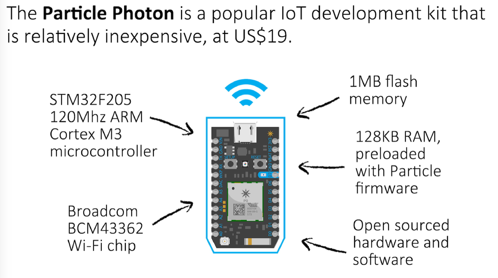
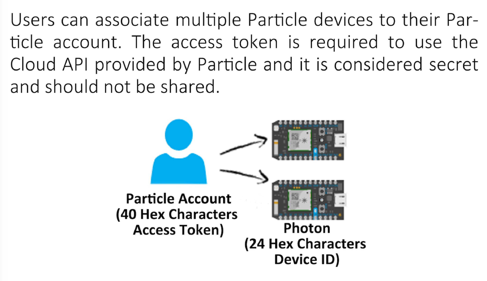
Only a single token is needed to access remote units via a cloud API. This turns out to be a weakness.
Accessing the IoT device
Whenever a user sends an instruction to the photon, the user has to supply a device ID, and the access token. The Particle cloud will authenticate the token and device ID before relaying instructions to the device.
The access token is all-powerful! With the token, you can list out all the device IDs. i.e. you do not need to know the device ID to send instructions. As a result, getting the access token ... gets you the photon!
Students identified mechanisms to get access:
- Social Engineering
- Man-in-the-middle attacks
They were effective mechanisms, and could be used to get the access token for any number of photons, nearby or remote. The students even found access tokens through google!
IoT
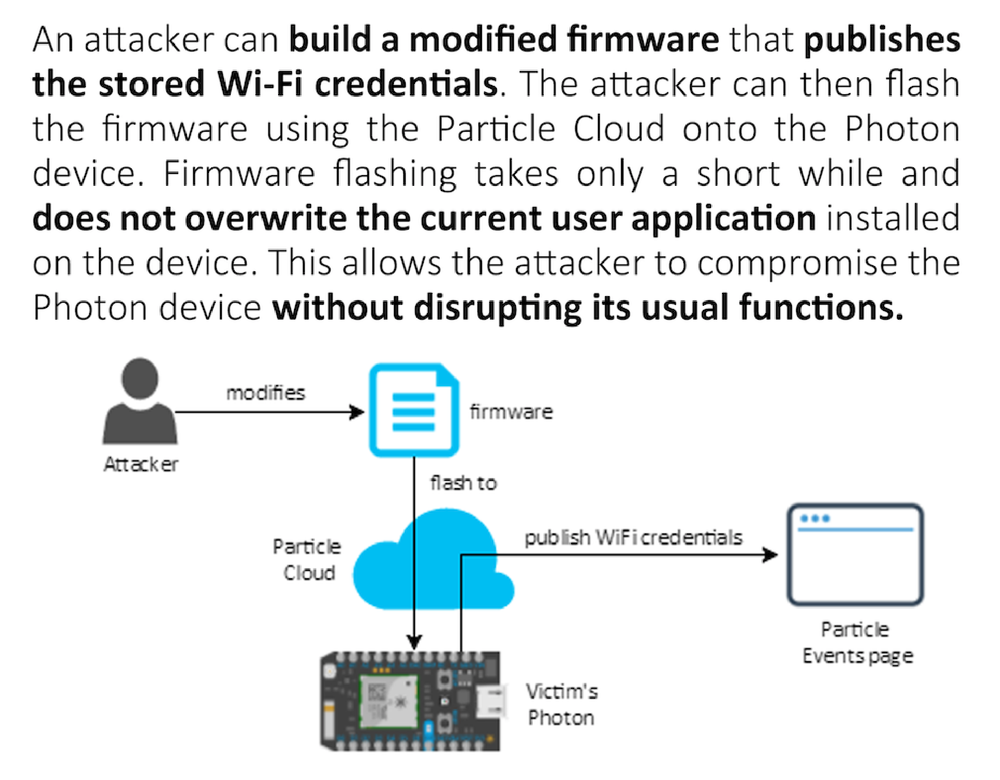
An attack on IoT and photons, with responsible disclosure


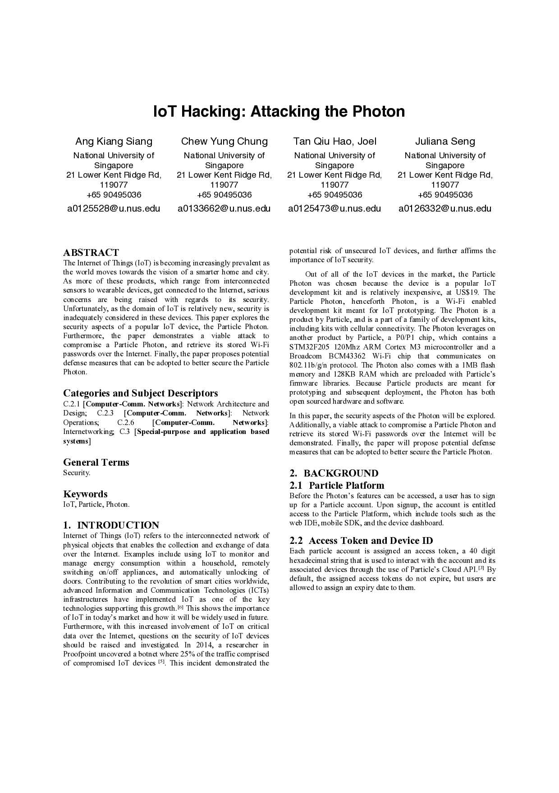
And they were talking to the manufacturers to come up with a resolution. They helped with mitigations to limit the access token capabilities, use two factor authentication, and more carefully authenticate the clients who initiate software updates...
The firmware stole WiFi credentials for the remote network near the photon.
Media and DVD security[i5]
The DVD CSS was/is a Content Scrambling System - data encryption scheme, developed by commercial interests to stop copying... but it is easy to copy a DVD!
The CSS algorithm details are a trade secret. There is a master set of 400 keys stored on every DVD, and the DVD player uses these to generate a key needed to decrypt data from the disc.
Linux users were excluded from access to CSS licenses because of the open-source nature of Linux. In October 1999, hobbyists/hackers in Europe cracked the CSS algorithm.
Since then, even though DVD have been largely replaced, industry players have been trying to prevent distribution of any software. The lesson to learn from this is that security-through-obscurity is a very poor strategy. The more modern replacement is HD Blue-ray, and it is generally region free. The source code and detailed descriptions for a CSS descrambler is available at [i5].
Summary: Infrastructure
We looked at four large infrastructural systems:
- SWIFT, a worlwide banking mechanism. Happily there have only been isolated attacks.
- PKI, which has a history of worrysome attacks, with BAD certificates issued by “authorities”.
- How the (US) NSA has been messing with Diffie Hellman, to do large scale https monitoring.
- The DNS.
We looked at the general idea of challenge-response, to perform authentication without having to reveal passwords, along with Kerberos, a strong challenge-response system. We then looked at voting systems, and how they might work.
Finally, we looked at some hardware - IoT devices, and DVDs, and the security in them.